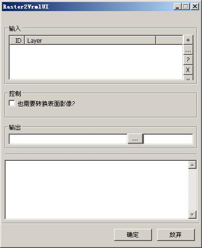

raster2vrml是一个转换栅格数据到VRML虚拟现实的工具。该工具由linux_23(李林)编写。更多的信息请参看这里。
实用类：geosings.tools.raster2vrml.Raster2Vrml
UI控制面板类：geosings.tools.ui.Raster2VrmlUI.Raster2VrmlUI
运行主界面如下：

主界面分为四个部分。一个是图层输入面板，一个是控制参数面板，一个是图层输出面板。一个是过程输出显示面板。
图层输入面板和图层输出面板的介绍可以看链接文档。最主要的核心在于控制 面板。
| 也需要转换表面影像？ |
是否需要导出蒙在地形表面的图像。 默认为否 |
| geosings, raster2vrml | 返回主目 录 |